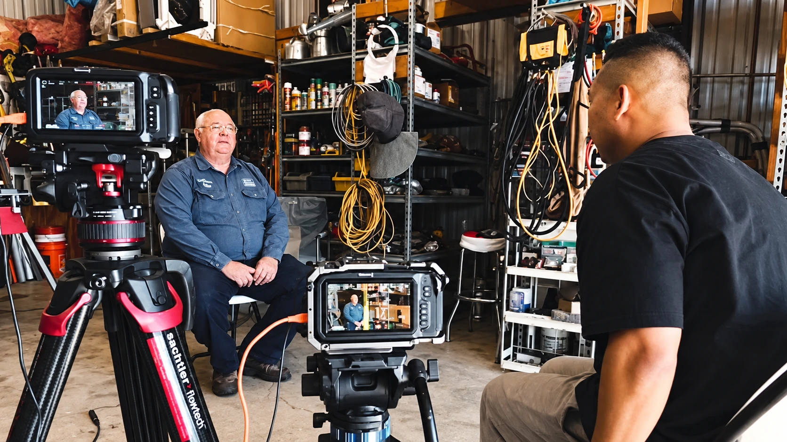
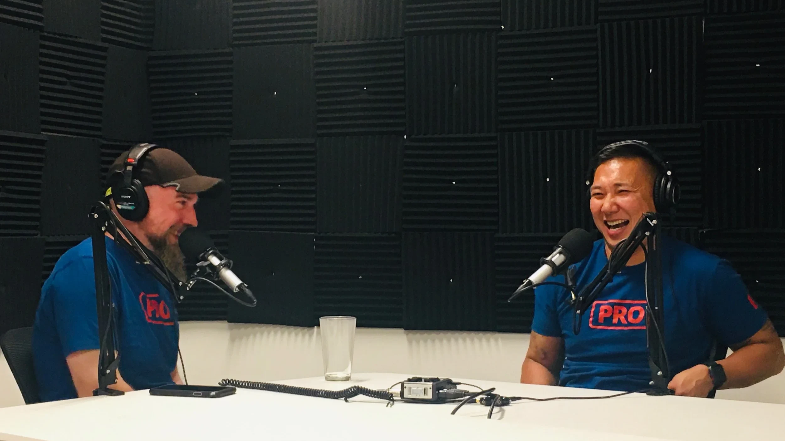
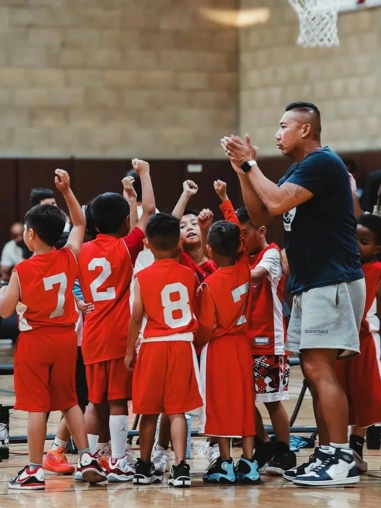

01
Find the signal.
Interview customers, study behavior and feedback, and connect recurring needs to programs, content, and product opportunities.
Programs. Product concepts. Internal tools. Operating systems. I connect the human problem to a working solution—and help people adopt and scale it.
JC Navarro · Senior Manager, Customer Marketing | Integrated Marketing
My career looks broad because the problems have been broad. The consistent pattern is listening closely, translating ambiguity into something clear, and leading the work from idea to adoption.
Interview customers, study behavior and feedback, and connect recurring needs to programs, content, and product opportunities.
Use AI-assisted development to prototype and ship tools, workflows, and experiences—with tests, security review, and responsible handoffs.
Design the operating systems, decision habits, and team structures that let useful work scale beyond one person.
A customer relationship problem became a working internal product.
Customer requests were spread across teams and pathways. I designed and built a shared routing experience with coordinated contact cooldowns, clearer ownership, and an IT-reviewed data path.
The product keeps responsibilities visible while preserving the human judgment required to protect customer trust.

I own and extend a customer-facing Community Hub, adding content operations, analytics, feedback loops, and recurring refresh workflows. I interview Pros and translate recurring needs into product concepts and prototypes for research outreach, roadmap voting, and program discovery.
The goal is not simply to collect quotes. It is to make the customer voice useful to Marketing, Product, Customer Success, and the teams deciding what happens next.
Before moving into customer marketing, I built creative operations and led teams across paid acquisition, product launches, customer stories, events, and executive communications.
Centralized intake, prioritization, resourcing, review, and handoff in one creative operating system.
Delivered by the team without losing visibility into priorities, ownership, or the quality of the work.
90%+ brief adoption. Tagged requests used an AI-guided brief generator that helped teams clarify the problem before production began.
Leadership at scale. Led six designers and three videographers during an Interim Creative Director assignment, alongside contractors and cross-functional partners. Explore the creative leadership archive.
Partnered with Performance Marketing on structured testing and evolved the work from voiceover-led scripts toward customer-led testimony.
Average watch time +45% · CTR +8% · Spend −25% in a two-week team test.
Researched qualified plumbing, electrical, and HVAC customers, matched them to product needs, and concentrated filming within one region.
Three customer shoots completed in one week, with all campaign videos delivered.
Designed an AI-assisted workflow that reviewed interview transcripts and surfaced relevant testimony with traceable timestamps.
Relevant evidence surfaced in minutes instead of roughly 30 minutes of manual searching per interview.

“JC sat at the intersection of creative and performance, and he made both better. He turns messy, ambiguous asks into clear problem statements and a plan everyone can execute against.”

My career has moved through government technology, ministry, entrepreneurship, creative leadership, operations, customer marketing, and AI-assisted product building. The titles changed. The throughline did not: listen closely, make complex ideas clear, and build something that helps people move forward.
I am at my best when a problem needs customer empathy and analysis, creative direction and systems thinking, leadership and hands-on building. That range is not a collection of unrelated skills. It is how I solve problems end to end.
Outside work, I coach youth basketball, spend time with my wife and three kids, and serve in my local community.
I’m interested in customer-led marketing innovation, AI transformation, marketing technology, and integrated leadership roles where insight, product thinking, systems, and people all matter.